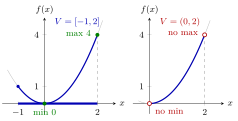

Extrema of Convex Functions on Compact Sets¶
Proposition¶
Let be a convex domain, let be a convex function, and let be a nonempty compact set. Then has a global minimum and a global maximum on : there are with
The set need not be convex. The same holds for a concave function , since then is convex.
Interpretation¶
A convex function on a closed and bounded set that stays away from the edge of its domain always reaches a lowest and a highest value. The proposition only guarantees existence; it says nothing about where these values are attained or how many points attain them.

Both panels show the convex function of Example 1. On the compact interval (left) the minimum is attained at and the maximum at the end point . On (right) the values come arbitrarily close to and to , but the points and that would attain them are not in the set (open circles), so there is neither a minimum nor a maximum.
The proof has two steps. A convex function is continuous at every interior point of its domain (see continuity of convex functions), so is continuous on , and a continuous function on a nonempty compact set attains its minimum and maximum by the Extreme Value Theorem. Convexity is used only to get continuity, which is why itself may be any compact set, convex or not (Example 3).
Each remaining hypothesis matters. Without compactness the extrema can be missing: on the open interval has neither (Example 1), and on the closed but unbounded set has no maximum. Without , continuity may fail at boundary points of , where a convex function can jump upwards, and then the minimum can be missing (Example 2).
This is the Math I Extreme Value Theorem on in a new setting; in compact means closed and bounded (the Heine-Borel Theorem). A common slip is to think that a convex function always has a minimum: on shows it need not. The proposition reappears in linear programming, where the extrema of a linear function on a bounded polyhedral set are located at extreme points.
Key Results¶
- A convex attains a global minimum and a global maximum on every nonempty compact , because is continuous on and the Extreme Value Theorem applies.
- The same holds for concave functions.
- An affine function on attains a global minimum and a global maximum on every nonempty compact , since .
- Compactness cannot be dropped: is convex on with , but attains neither nor (Example 1 below).
- A convex function is guaranteed to be continuous only on (Example 2 below shows a jump at the edge), which is why must lie in the interior.
Examples¶
1. The square function. On , which is compact and lies in the interior of , the convex function has global minimum at and global maximum at . On , which is not closed, takes all values in but neither nor : there is no minimum and no maximum.
2. A jump at the edge of the domain. Let and , for . This is convex: for and , , and the other cases are linear or trivial. On the compact set the maximum is attained at and at , but is not attained. The proposition does not apply because is not an interior point of .
3. A compact set that is not convex. Let on , a sum of convex functions, and let be the unit circle , which is compact but not convex. On we have , so the global minimum is at and the global maximum is at .
4. A quadratic function on a disc. Let on , which is strictly convex, and . Since is nonempty and compact and , the proposition guarantees a global minimum. Completing the squares gives
so everywhere, with equality only at . This point lies in because , so the global minimum of on is , attained only at .
Prerequisites¶
- Continuity of Convex Functions
- Extreme Value Theorem on Compact Sets
- Compact Set
- Global Maximum and Minimum on
Related Concepts¶
- Local Minimum of a Convex Function
- Set of Minimizers of a Quasi-Convex Function
- Strictly Convex Function
- Optima at Extreme Points
- Extreme Value Theorem
- Heine-Borel Theorem
Sources¶
- Math VI: Convexity and Optimization · Week 3
- H. E. Nusse and M. Dienstknecht, Math VI: Convexity and Optimization, lecture notes 2026–2027, Section 3.2
Aliases: existence of extrema of convex functions, convex function attains its minimum and maximum Keywords: V\subseteq\operatorname{Int}(D), \min_{\boldsymbol{x}\in V}f(\boldsymbol{x}), \max_{\boldsymbol{x}\in V}f(\boldsymbol{x}), nonempty compact set, global minimum and global maximum exist Symbols: element of, infinity, lambda, real numbers, square root, subset
Last updated: 10 November 2026 16:43
Extrema of Convex Functions on Compact SetsContinuity of Convex FunctionsExtreme Value Theorem on Compact SetsCompact SetGlobal Maximum and Minimum on \(\mathbb{R}^n\)Local Minimum of a Convex FunctionSet of Minimizers of a Quasi-Convex FunctionStrictly Convex FunctionOptima at Extreme PointsExtreme Value TheoremHeine-Borel Theorem